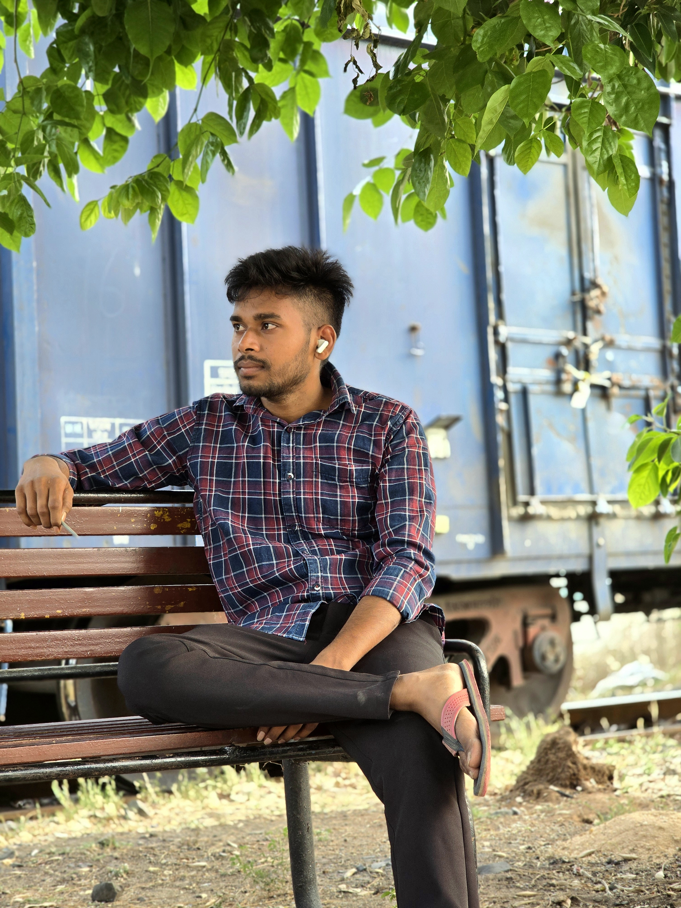

Class 10 & 12
Jawahar Navodaya Vidyalaya, Sijulata, Seraikella
INDIAN RAILWAYS • SIGNAL DEPARTMENT
Technician Grade-III in the Signal Department of Indian Railways, focused on railway signalling, safety, reliability and continuous professional growth.

WHO I AM
I am Ritik Mahato, a Technician Grade-III (Pay Level-2) in the Signal Department of Indian Railways. I completed my railway training at STTC Kharagpur and have recently completed my training. My goal is to keep learning, work safely and progress towards higher responsibilities.
ACADEMIC BACKGROUND
Jawahar Navodaya Vidyalaya, Sijulata, Seraikella
Government Polytechnic, Kharsawan
IGNOU • 2024–2027 session
RAILWAY JOURNEY
Started my railway journey at Level-1.
Joined Indian Railways in the Signal Department.
Pay Level-2Training completed at STTC Kharagpur; continuing practical learning and field development.
Long-term career target: progress towards Level-6 through experience, skills and continued education.
SIGNALLING & TECHNICAL KNOWLEDGE
Railway track occupancy detection and related signalling concepts.
Relay-based signalling, contacts and circuit fundamentals.
Point machine and point operation relay circuit concepts.
EI room, signalling interfaces and equipment awareness.
Signalling power supply, batteries and protection equipment.
Practical understanding of railway signal equipment and maintenance.
LEARNING & DEVELOPMENT
Completed Signal Department training at STTC Kharagpur, with theory and practical exposure to railway signalling systems, field equipment and modern railway technologies.
TRAINING & FIELD MOMENTS
Training photographs, signalling practical sessions, KAVACH lab, relay and IPS equipment, station work and memorable moments from the STTC Kharagpur journey.
LET'S CONNECT
For professional information or collaboration, connect with me through the contact details you choose to publish.
Email Me ↗